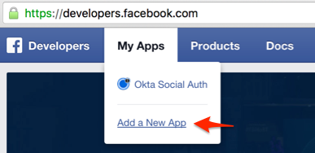
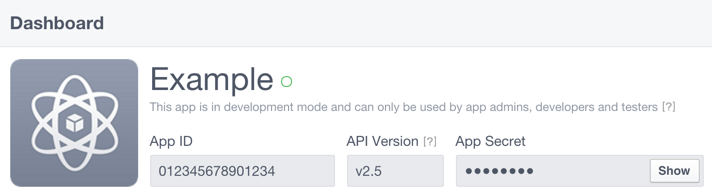
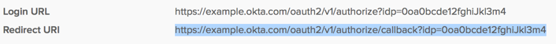
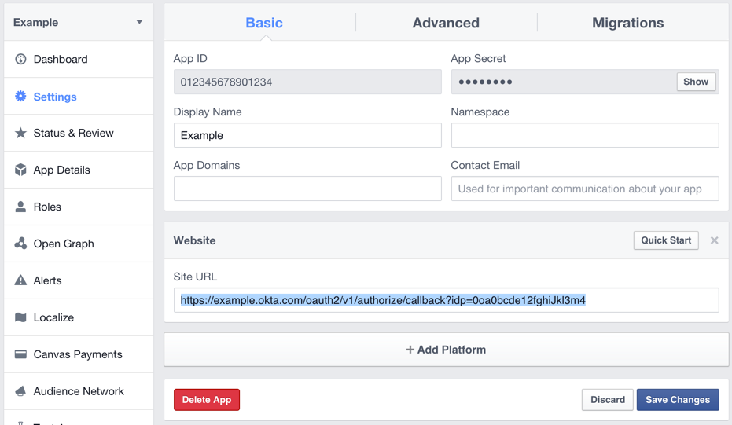

Identity Provider Set Up for Facebook
Go to developers.facebook.com and register for a developer account. You may be prompted to register if you have not previously used the Facebook Developer site.
- Click My Apps from the toolbar and select Add a New App from the dropdown.

- Select Website from the Add a New App window.
- Choose a name of your app. This name is what your users will see when they authenticate to your app.
- Click Create New Facebook App ID.
- You will need to choose a category for your app in the Create a New App ID window. If you are unsure what to select, we suggest selecting the Utilities category. Click the blue Create App ID button when you are done.
- When you see Quick Start for Website, click Skip Quick Start. You should now see the Dashboard for the app you are creating.

Finish configuring the Facebook Identity Provider in Okta
- Return to the browser tab where you were configuring Identity Providers in Okta.
- Use the App ID from above as the Okta Client Id.
- Use the App Secret from above as the Okta Client Secret.
- Once the Okta Facebook configuration is saved in Okta, you will need to copy the redirect URI from the identity provider as shown below:

Return to Facebook
- In your Facebook app configuration, click Settings in the left pane.
- Click Add Platform.
- Select Website.
- In the Site URL field in the "Website" section, enter the Redirect URI you obtained above.
- Click Save Changes.

Note regarding Facebook scopes
The public_profile and email OAuth scopes are automatically included by Okta.
If your app requires more than public_profile, email, it will require a Login Review. For more information on Facebook scopes, go to the Permissions section on their developer site.